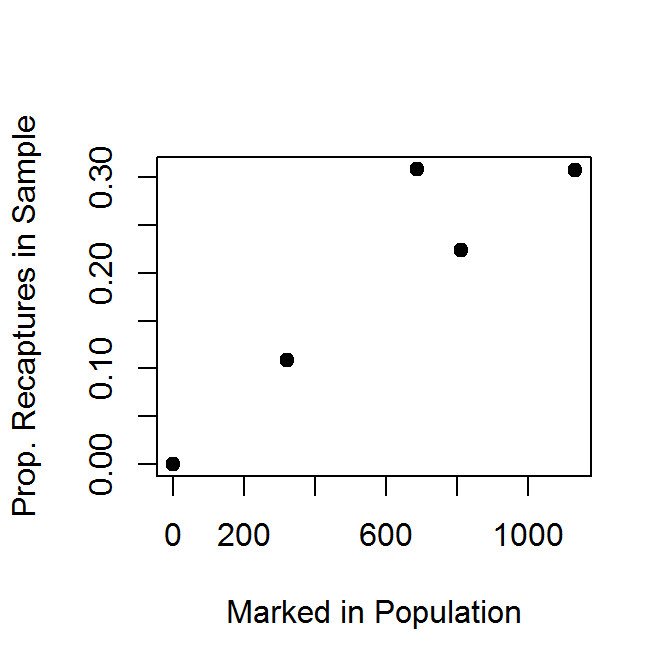

mr1 <- mrClosed(43,123,16,method="Chapman")
summary(mr1)
confint(mr1,verbose=TRUE)data(RBTroutUNSP)
ch1 <- capHistSum(RBTroutUNSP)
mr2 <- mrClosed(ch1,method="Chapman")
summary(mr2)
confint(mr2,verbose=TRUE)
mr3 <- mrClosed(n=c(321,412,178,415,367),
m=c( NA, 45, 55, 93,113),
R=c(321,412,178,415, NA),method="Schnabel")
summary(mr3)
confint(mr3,verbose=TRUE)